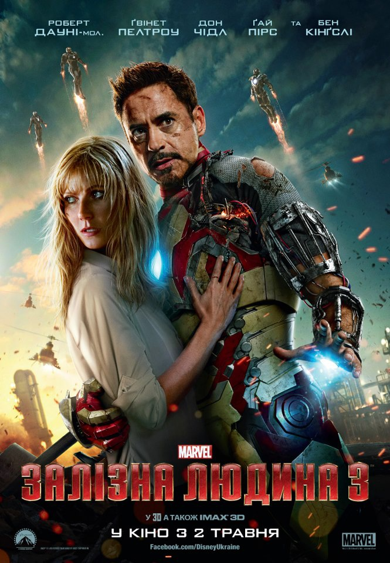
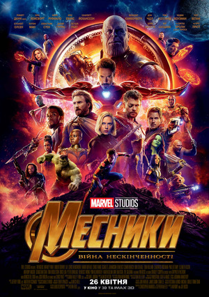

Мої улюблені Фільми
Перше місце Залізна людина 1
.jpeg)
|
«Залізна людина» - американський фантастичний супергероїчних фільм про героя коміксів Marvel Тоні Старка і його alter ego - Залізна людина.Розробка стрічки проводилася ще з 1990 року компанія Universal Studios, 20th Century Fox and New Line Cinema, однак робота закипіла лише коли до справи взялися Marvel Studios. Прем'єра відбулася 14 квітня 2008 року в Сіднеї. В Україні фільм вперше показали 30 квітня. У прокаті фільм зібрав 585 133 287 доларів, а продажі на DVD в США склали 162 436 764 долара при кошторисі в $ 140 млн. Продовження історії - «Залізна людина 2» - вийшло на екрани кінотеатрів в Україні 29 квітня 2010 року. |
Друге місце Залізна людина 2
|
|
«Залізна людина 2» - продовження фільму «Залізна людина» 2008 року заснованого на коміксах студії Marvel.У Залізній людині 2 світ дізнається, що мільярдер-винахідник Тоні Старк (Роберт Дауні-молодший) насправді є броньованим супергероєм Залізною Людиною. Під тиском з боку уряду, преси та громадськості, які вимагають від Тоні поділитися своєю технологією з військовими, Залізний Людина все одно не хоче розкривати секрети броні, оскільки побоюється, що ця інформація може потрапити у ворожі руки. Прем'єра фільму відбулася 26 квітня 2010 року в Лос-Анджелесі, Каліфорнія і 28 квітня 2010 року в Франції. У США фільм вийшов 7 травня, в Україні - 29 квітня. |
Третє місце Залізна людина 3
|  | «Железный человек 3» художественный фильм режиссера Шейна Блэка, основанный на одноименных комиксах издательства Marvel Comics. Фильм стал третьим «собственным» в серии фильмов о супергерое Железного человека, четвертым, в котором Старк принимает активное участие как герой, и седьмым в рамках кинематографического вселенной Marvel, фильмы которых объединяет общая сюжетная линия. Главную роль, как и в предыдущих частях, сыграл Роберт Дауни-младший. |
Четверте місце МЕСНИКИ війна нескинчености
|  | «Мстители Война Бесконечности» - американский супергеройский фильм, снятый братьями Руссо по мотивам комиксов о одноименную команду издательства Marvel. Он является продолжением фильмов кинематографического вселенной Marvel. Также он является продолжением фильмов «Мстители» и «Эра АЛЬТРОН». Фильм был объявлен в октябре 2014 года под названием «Мстители Война бесконечности - Часть 1». В апреля 2015 года года года братья Руссо стали режиссерами картины, а в мае Маркус и МакФи присоединились к работе над сценарием. |